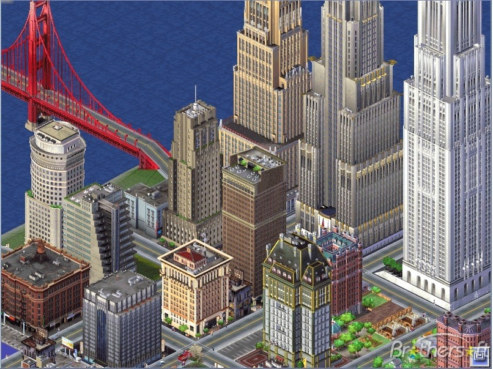

SimCity 3000 appreciation post
(nicked all these pictures from Google Images: I know at least 2 of these are from Flickr and MobyGames)
SimCity 3000 was the best SimCity ever, period. It was hilarious, had depth, and little touches like traffic on the left and the d/m/yyyy year style. Good times.